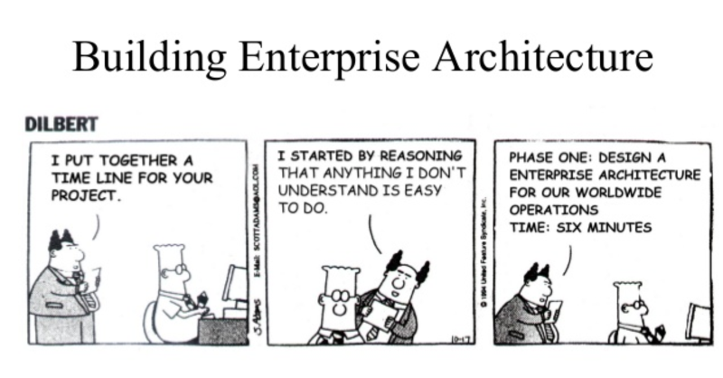

Enterprise Applications
Police Management Information System (PMIS):
Built a system for Nepal Police to manage personnel data, organization hierarchy, and activity records, aiding in decision-making for promotions, transfers, and retirements. - client needed a robust and unified web application to decommision their inhouse legacy desktop application - I led the team to developed Police Management Information System to manage 75,000+ personnel records, streamlining access to the individuals' dossier - client desparately needed an efficient method for handling promotion and transfers. they used to manually calculate for each personnel by looking at each files such as trainings, education, years-in-service, discipline, awards which a person can accumulate a lot of and requires meticulous and tedious work to translate into merit points as per the guidelines based on the dossier. they had entire department working for it round the clock. - I built a decision support system which could generate a merit list in seconds for the entire workforce in organization. I used the stored procedures in oracle for calculation and populate the table. the table used by a view will be used in reporting on the web app frontend.Police Personnel Information System (PPIS):
Developed a pension and gratuity calculation web app for retired police personnel and their dependents. - Client used to manually calculate to determine the pensions/retirement-facilities of each applicant based on a provided spreadsheet. this aproach could only serve at most 5 applicant a day because calculating for each personnel by manually checking each files such as trainings, education, years-in-service, discipline, awards and a police personnel could accumulate a lot of these until their retirement. - The solution was to build a web application in .NET with oracle db, hosted in the local server, once all the dossier data was accurately imported the system was able to improve the performace by 98%. the service went from 5/day to maximum of 5 minutes per applicant.Local Government Personnel System:
Designed a web application for managing employee records and operations at the federal local government level.Revenue System for TIACAO
Created a revenue management system for Tribhuvan International Airport Civil Aviation, streamlining financial operations and data reporting. ETL and Data Migration Tools
Built customizable ETL tools for cross-database data migrations and architecture analysis. Ensured accurate data mapping and validations during large-scale migrations. - cross db data migration tool was required while the city offices in my country transitioned from local desktop app to a central web app - 5 large data migration project for big metro city with data volume ranging from 10 to 25 gb - 90 small data migration project for smaller municipal city with data volume less than 10 gb - my scrpits was able to guarantee 100% data accuracy over the known systems, 90% accurate over other. it consist a .net app capable of connecting to mysql,postgres,oracle,mssql or a flat-file and ETL into the postgres db at the end.